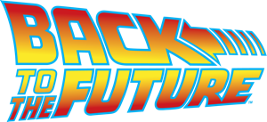
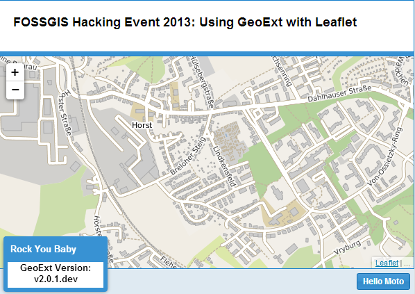

GeoExt 2 - Was ist neu und was bringt die Zukunft?
Christian Mayer (ISB AG) | christian.mayer@isb-ag.de
20. März 2014 | FOSSGIS 2014 | Berlin
Über mich
- Anwendungsentwickler ISB
AG
- Team Umwelt / GIS
- Webmapping, GDI
- Geoportale, INSPIRE
- Open Source GIS
- Kernentwickler GeoExt2
- Kernentwickler GeoExt Mobile (GXM)
- Kernentwickler SHOGun
- Blogger

ISB AG
- Hauptsitz in Karlsruhe
- Niederlassungen in Mainz, Stuttgart, Berlin, München
- Individuelle Softwarelösungen für
- Industrie
- Öffentliche Verwaltungen
- Entwicklung, Schulung, Consulting
- Team Umwelt / GIS
- u.a. Webmapping u. GDI auf Open Source Basis
- GeoExt, OpenLayers, GeoServer, etc.
GeoExt
- JS-Framework für anspruchsvolle Webmapping-Anwendungen
- Basiert auf OpenLayers und ExtJS
- Vereinigt Vorteile der Basisbibliotheken
- Erweitert ExtJS um räumliche Komponenten
- "Rich Web Mapping Interfaces"
- OpenSource (BSD, Ausnahme der Fa. Sencha), © OSGeo
- Erster
Commit am 25. März 2009
Hintergrund GeoExt 2
- GeoExt 1.x basiert auf OL 2 und ExtJS 3.x
- 2011: ExtJS-Version 4 kam auf den Markt
- Viele Verbesserungen u. weitreichendere Möglichkeiten
- Kompatibilität von GeoExt zu ExtJS 4 wurde notwendig
- Internationaler Codesprint
- April 2012 in Bonn, Dauer: 1 Woche
- 20 Teilnehmer aus aller Welt
- Gefördert duch Sponsoren
- Ziel: Herstellung Kompatibilität von GeoExt zu ExtJS 4
- Ergebnis
- 1. ALPHA-Release
- Komplett neue API-Dokumentation
- Öffentliche Beispiele
Neuerungen / Vorteile von GeoExt 2
Integration in den ExtJS MVC Architekturansatz
Kompatibilität mit den Build-Tools von Sencha
Ein Screenshot von von einer index.html als code + filesize
Verbesserte API-Dokumentation und Präsentation
Einfachere grafische Ausgestaltung der Anwendungen
Zukünftige Entwicklung


Upgrade ExtJS 5
- ExtJS 5 voraussichtlich in 2014 veröffentlicht
- Upgrade von GeoExt auf ExtJS 5 ?
- Probleme
- OpenLayers 2 wurde beim Upgrade auf GeoExt 2 nicht angetastet (nur Minor-Upgrades)
- Ist OpenLayers 2 noch zeitgemäß?
- Was ist mit OpenLayers 3?
- Was ist mit Leaflet?
Unterstützung Multipler Mapping-Bibliotheken
- 2013, FOSSGIS Codesprint: Erste Schritte:
- Untersuchung der Thematik
- Entwicklung eines Konzepts zur Entkopplung von GeoExt2 und der zugrundeligenden Kartenbibliothek
- Prototypische Umsetzung für die MapPanel-Klasse
- Dokumentation der Ergebnisse
- Probleme
- Welchen Bedarf gibt es für eine solche Architektur?
- Format-Parser-Klassen von OL
- Finanzierung
- Thema auf der GeoExt-Mailing-Liste

/